지난 퀴즈 보정과 헤더 너비 비교
사진을 누르면 크게 볼 수 있습니다. 디자인 부품 모음에서는 실제 버튼·메뉴·말풍선을 직접 사용해 볼 수 있습니다.
날짜 옆에 주차를 더하기
주차는 제목 위의 작은 표식입니다. 1–7일은 첫째 주, 8–14일은 둘째 주로 계산하며 기존 설교일을 그대로 사용합니다. DB에 중복 저장하지 않습니다.

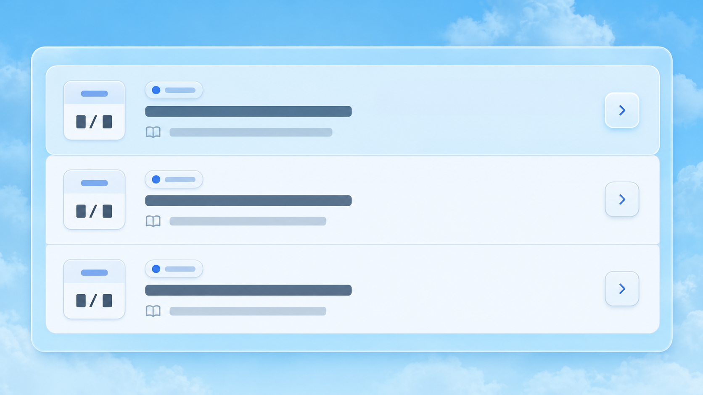

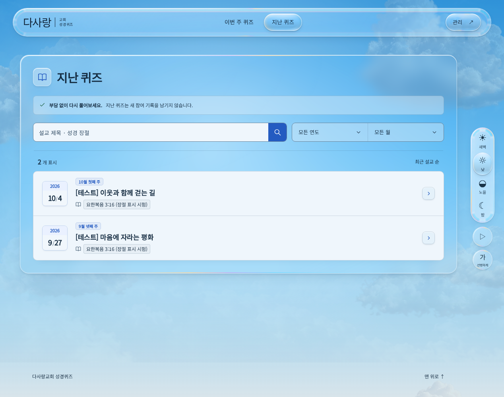
같은 크기, 두 가지 클릭 표시
왼쪽 빈틈은 숨긴 연도 라벨의 여백이 남아서 생겼습니다. 이제 선택 칸이 전체 너비를 채우고 화살표는 안쪽으로 들어옵니다. 연도는 테두리, 월은 밝은 바탕으로 클릭을 표시합니다. 키보드에서는 두 칸 모두 테두리를 표시합니다.


헤더 너비 비교
현재 헤더는 최대 1376px, 제어판은 창 오른쪽 24px에 붙습니다. 화면이 넓어질수록 차이가 커지는 서로 다른 배치 기준입니다. 아래는 모두 실제 앱을 같은 낮 배경·정지 상태·1600 × 1000에서 촬영했습니다. B는 촬영할 때만 적용한 대안으로, 실제 앱 헤더는 A를 유지합니다.
A는 중앙에 뜬 헤더의 형태를 유지합니다. B는 공통 본문 배치 여백부터 제어판 끝까지 묶어 넓은 화면의 정렬을 맞춥니다. B에서는 오른쪽 경계가 맞아 더 단정하지만 메뉴 중심도 조금 오른쪽으로 이동합니다. 지난 퀴즈의 읽기 창은 별도의 최대 너비를 유지합니다.
시각적 판단: 메인은 중앙 제목과 균형을 이루는 A, 지난 퀴즈도 좁은 읽기 창 위에 여유를 남기는 A가 안정적입니다. 관리 공간은 사이드바·본문·제어판을 하나로 묶는 B가 더 정돈돼 보입니다. 전체 페이지에 같은 기준을 적용할지는 세 쌍을 비교해 결정할 수 있습니다.
메인

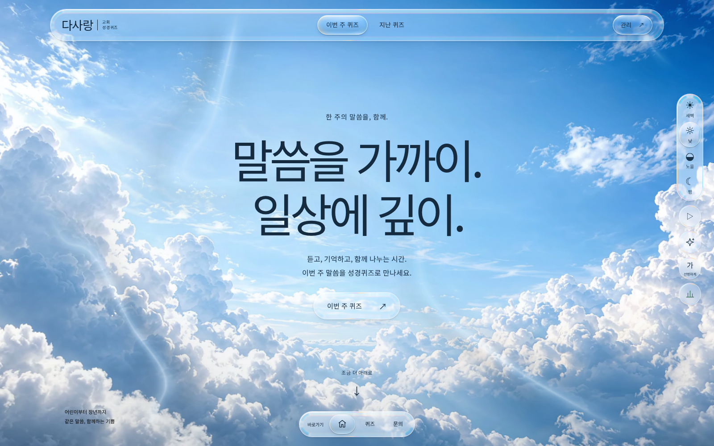

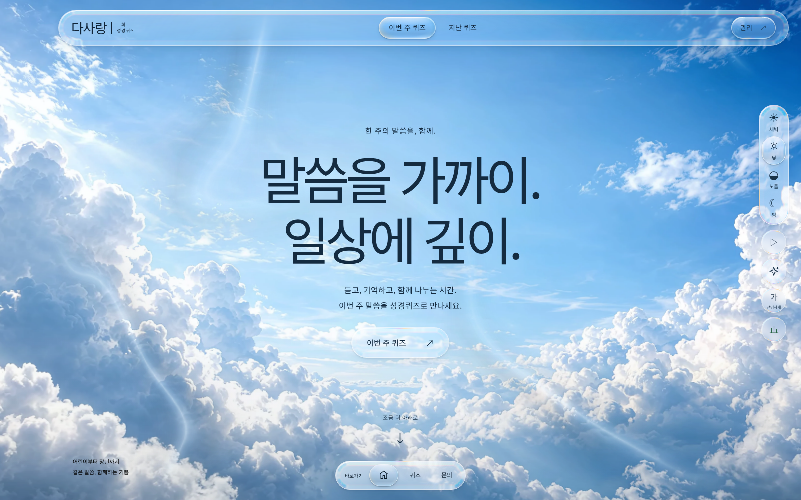
지난 퀴즈

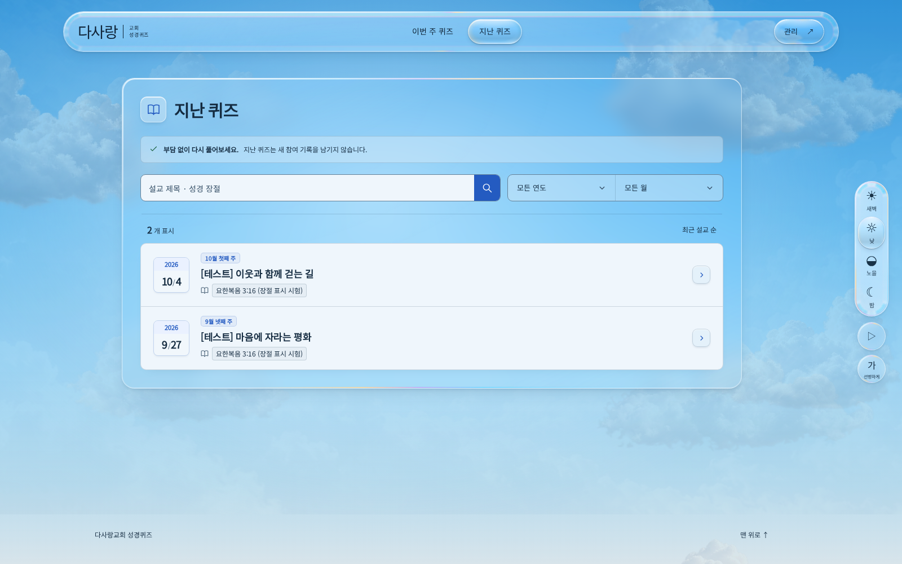

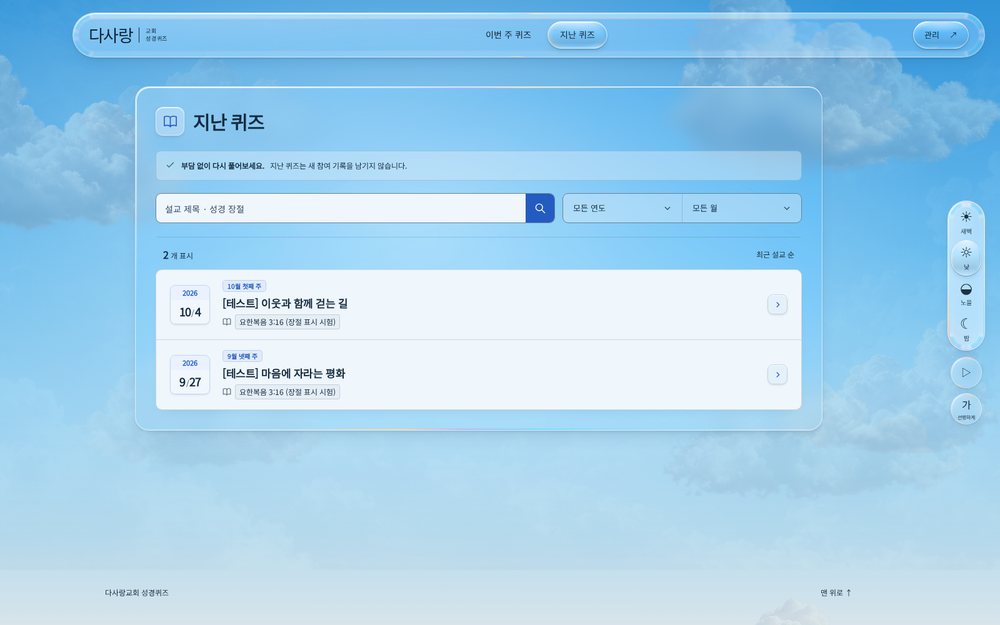
관리 공간

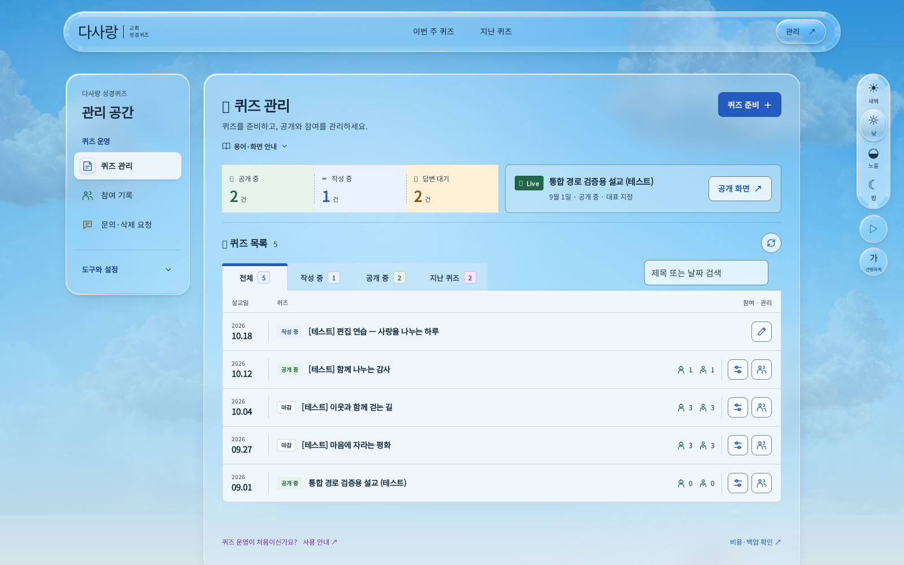

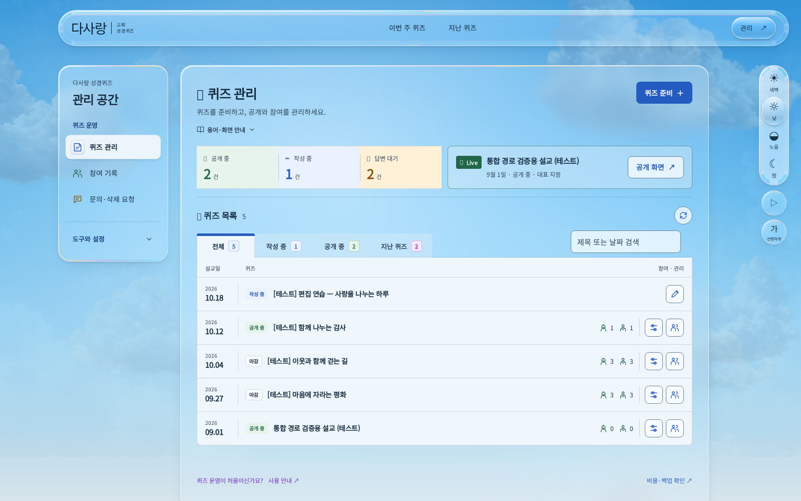
실제 네 시간대와 모바일
각 시간대의 실제 화면입니다. 모바일은390px이며320px에서도 넘침을 검사했습니다. 실제 휴대폰 촬영은 아닙니다.
새벽 화면 열기

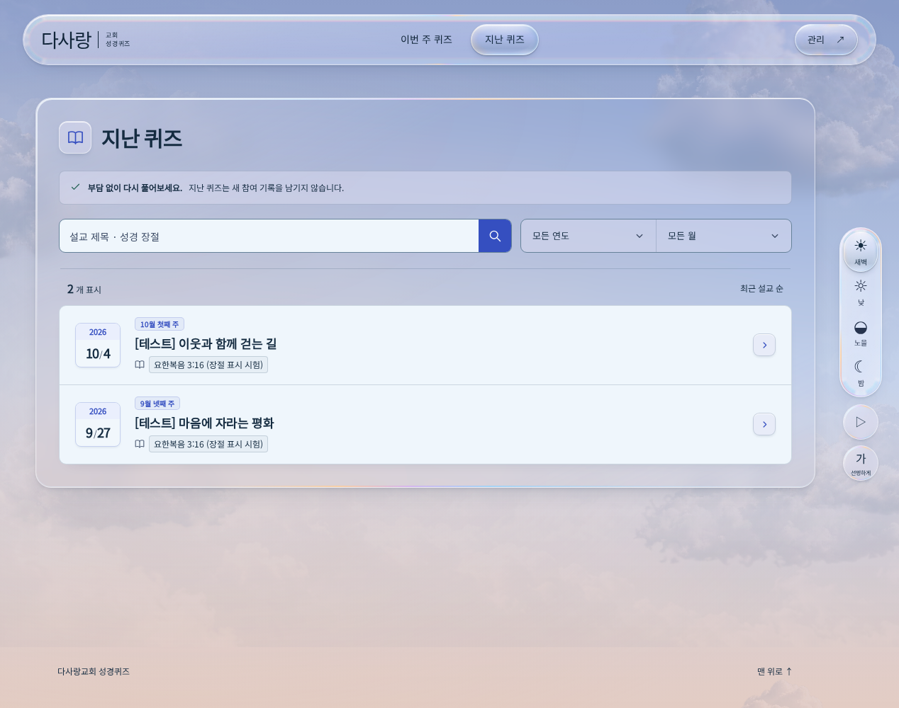

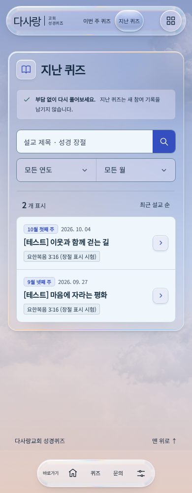
낮 화면 열기

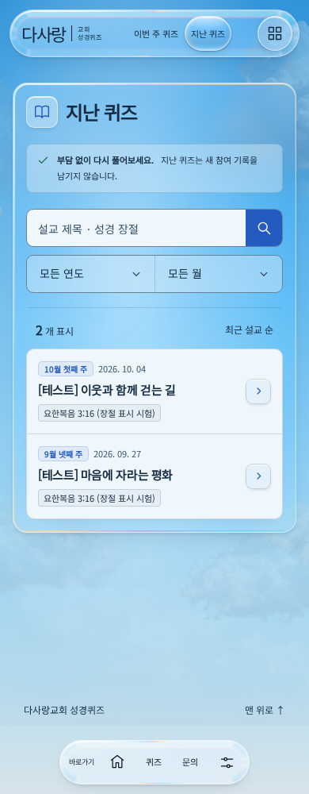
노을 화면 열기

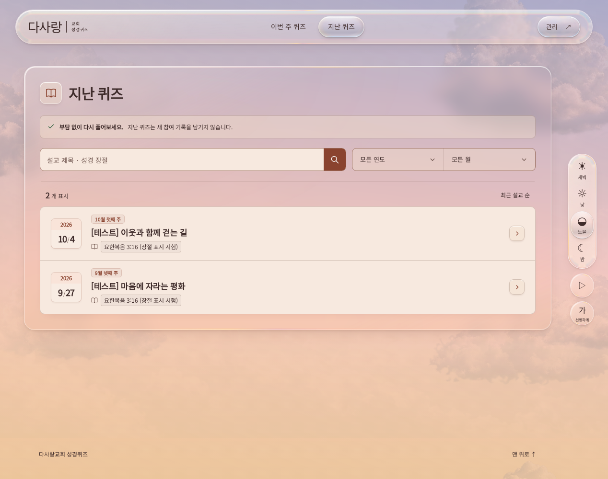

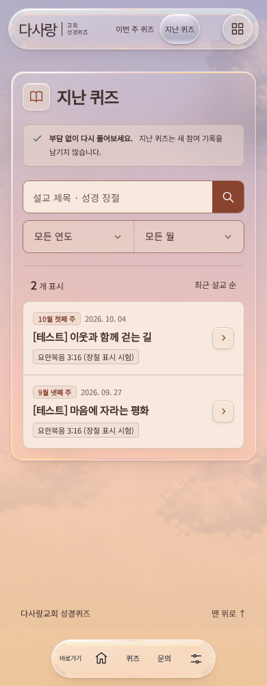
밤 화면 열기

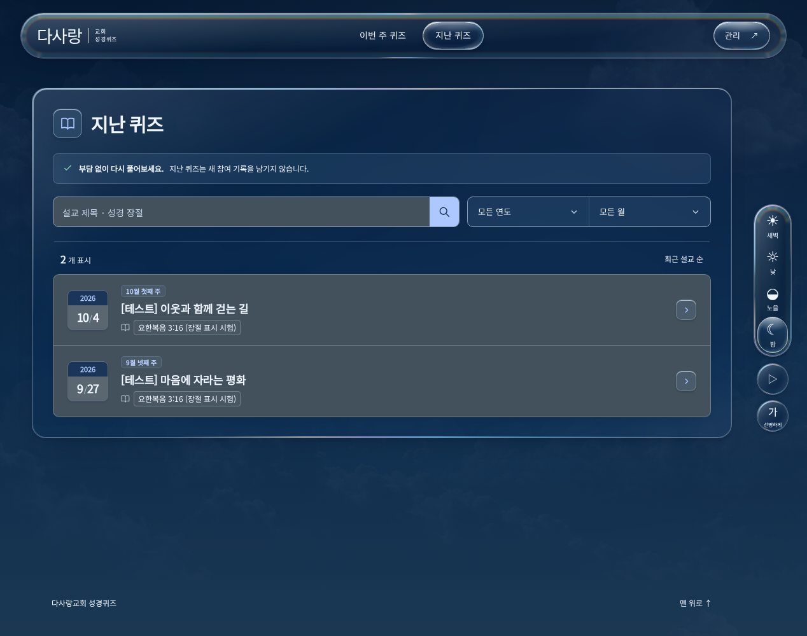

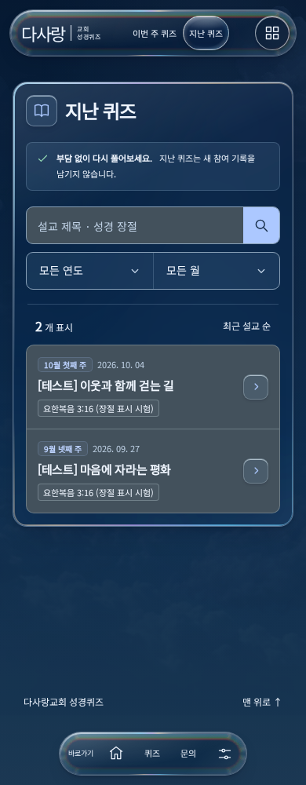
2026-10-19 P9-26 로컬 검토본. 실제 퀴즈·원격 데이터는 변경하지 않았습니다.